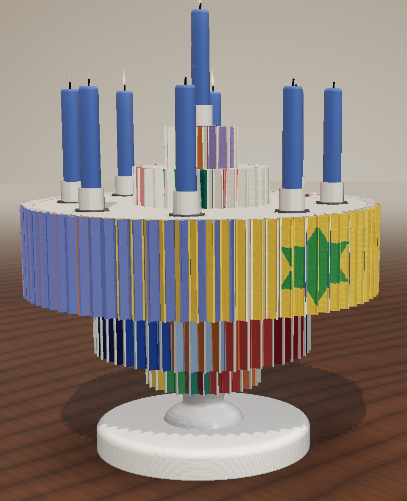
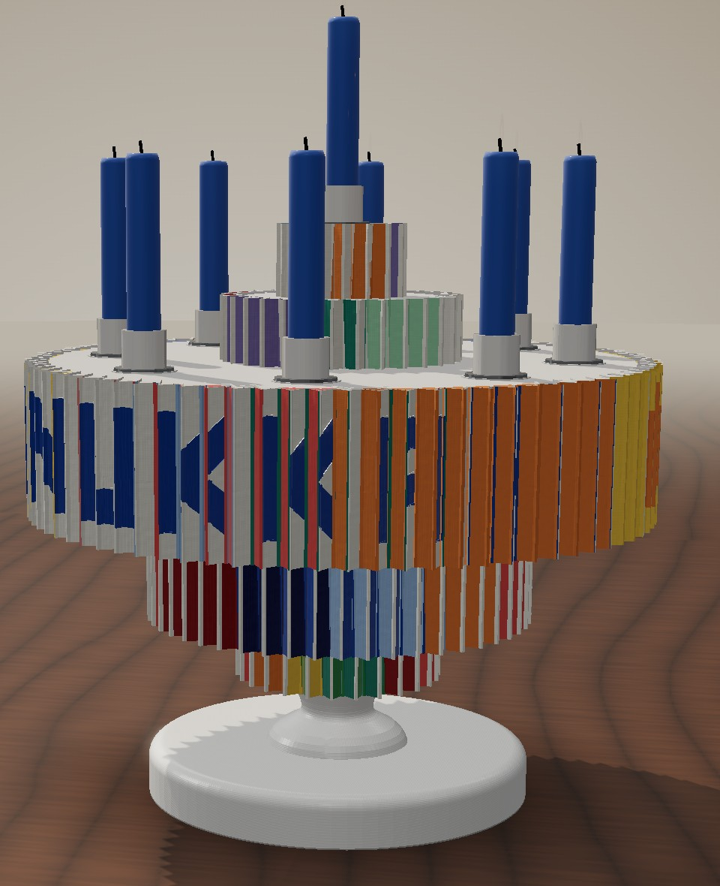

יעקב אגם נולד ב־1928 בראשון לציון, ומ־1951 חי ויצר בפריז. הוא מאבות האמנות הקינטית והאופטית: יצירות שמשתנות כשהצופה זז. מי שהולך לאורך ציור של אגם רואה תמונה אחת משמאל, ותמונה אחרת לגמרי מימין.
עבודות שלו עומדות בערים בכל העולם, ובהן מזרקה ברובע לה דפאנס בפריז והחנוכייה הגדולה בעולם, בניו יורק. באפריל 2026 קיבל את פרס ישראל, וביוני 2026 הלך לעולמו, בגיל 98.
יעקב אגם מול המזרקה בכיכר דיזנגוף
מזרקת "אש ומים" בכיכר דיזנגוף
ב־1986 הוצבה במרכז כיכר דיזנגוף בתל אביב המזרקה של אגם: טבעות משוננות וצבעוניות שמסתובבות, סילוני מים, ומלמעלה להבת אש שפורצת מתוך המים. לכל שן בטבעות שתי פאות בשני צבעים, ולכן התמונה משתנה תוך כדי סיבוב. המזרקה פורקה ב־2016 כשהכיכר שופצה, וחזרה לכיכר המחודשת ב־2018. לאש ולמים יש מקום גם בסיפור חנוכה: נס פך השמן ואור הנרות.
1986המזרקה נחנכה בכיכר דיזנגוף
408פאות צבועות ביד בחנוכייה שלנו
5טבעות משוננות, כמו במזרקה
2תמונות: אחת משמאל ואחת מימין
איך הכנו את החנוכייה
רצינו לעשות מחווה ליעקב אגם, שהלך לעולמו השנה, ובחרנו במזרקה המוכרת שלו. את העיצוב בנינו בעזרת בינה מלאכותית: תיארנו את המזרקה, ויחד תכננו מודל תלת־ממדי של חמש טבעות משוננות, את מקומות הנרות והשמש, ואת תוכנית הצבעים לכל פאה.
החלקים הודפסו בהדפסה תלת־ממדית מפלסטיק ממוחזר, בדיוק בכמות שצריך ובלי פסולת חיתוך. אחר כך נעמי וליבי צבעו ביד כל פאה, טבעת אחרי טבעת, לפי חוברת צביעה שהכנו. כמו בציורים של אגם, משמאל רואים מגן דוד וסביבון, ומימין את המילה HANUKKAH וסופגנייה.

משמאל: מגן דוד

מימין: HANUKKAH
האהבה שלנו לאמנות
נעמי וליבי אוהבות ליצור, לצייר ולצבוע. בעבודה על החנוכייה למדו שאמנות יכולה לזוז ולהשתנות, שמחשב ובינה מלאכותית יכולים להיות כלי יצירה כמו מכחול, ושהכי כיף זה לראות רעיון הופך לחפץ אמיתי שמדליקים בו נרות. החנוכייה עשויה לשמש אותנו שנים רבות, וכל שנה מחדש תזכיר לנו את יעקב אגם.
נעמי קפלן כיתה ב'1 · ליבי קפלן כיתה ד'1 · בית ספר כצנלסון, גבעתיים